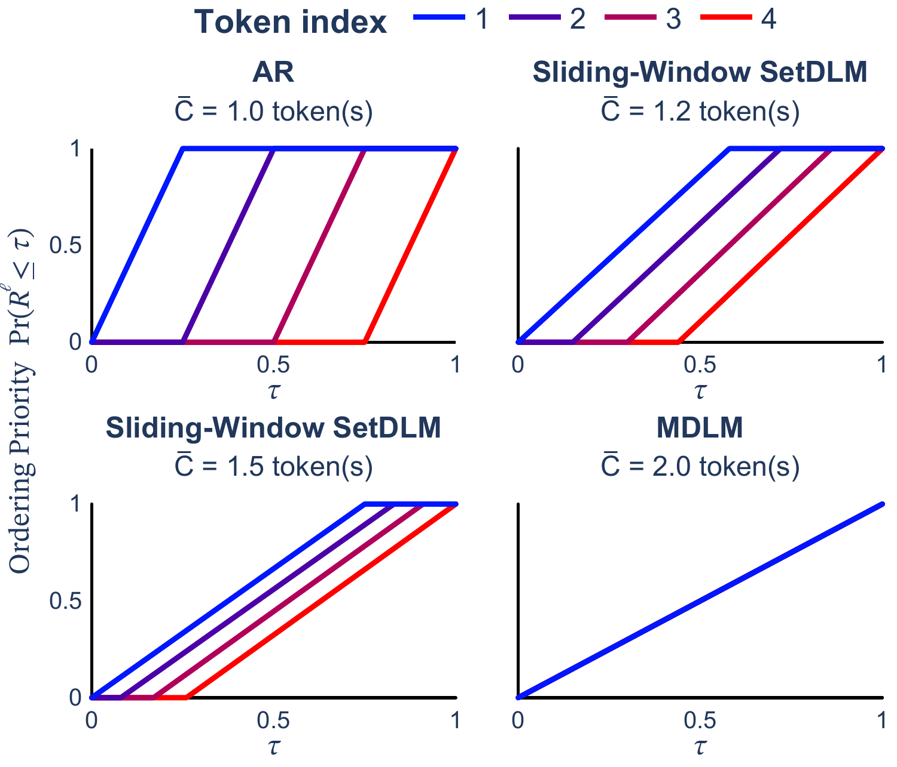
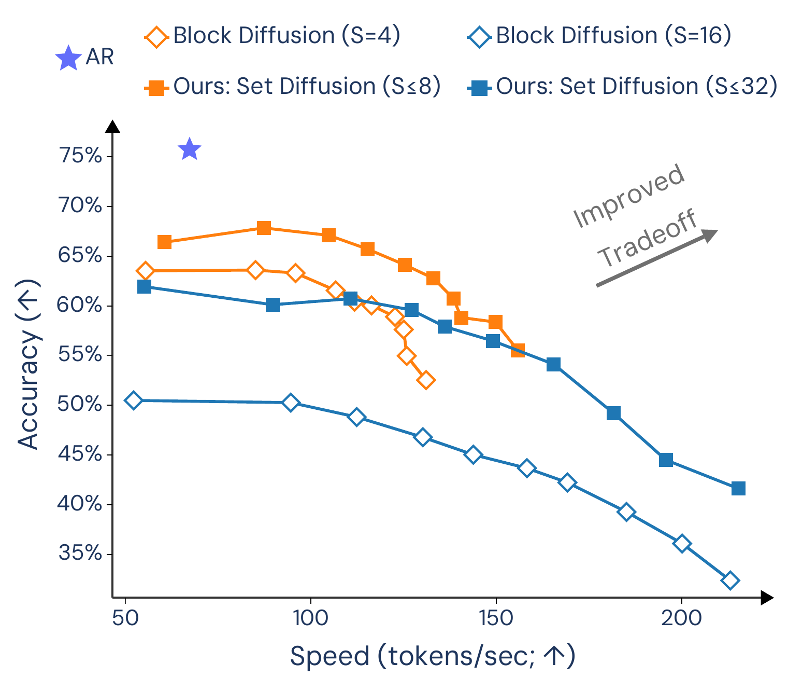

The One-Line Idea
Diffusion language models can generate many tokens in parallel, but standard masked diffusion usually gives up variable-length generation and KV caching. Block diffusion recovers some of that structure by generating blocks left-to-right. Set diffusion keeps the cacheability of an autoregressive factorization, but replaces fixed blocks with flexible token sets.
Why Blocks Are Not Enough
Block diffusion models a sequence as a left-to-right sequence of contiguous blocks. This is already a useful bridge between autoregressive and diffusion language models: tokens inside a block can be denoised in parallel, and completed blocks can be cached.
The limitation is that the block structure is rigid. A model cannot naturally insert tokens at arbitrary positions, choose differently sized groups of tokens, or update the cache until the whole current block is finished. That is awkward for infilling and leaves parallelism on the table.
Set Diffusion
Set diffusion factorizes generation over token sets \( \sigma_1, \ldots, \sigma_N \). Each set selects positions, and the model predicts the token values at those positions conditioned on earlier revealed sets. Marginalizing over possible set orderings gives:
This recovers several familiar cases. Single left-to-right tokens recover autoregression. Uniform random positions recover order-agnostic masked diffusion. Fixed contiguous left-to-right sets recover block diffusion. The useful middle ground is everything in between.
Sets can contain arbitrary positions, enabling insertion and infilling rather than only next-block decoding.
Larger sets expose more parallelism; smaller sets preserve a stronger autoregressive bias.
After a set is accepted, its keys and values can be committed before the next inference step.
Interpolating Token Orderings
The ordering distribution \( \pi(\sigma) \) is induced by reveal times. Each position \( \ell \) gets a random reveal time \( R_\ell \), with CDF \( \Pr(R_\ell \le \tau) = \alpha^\ell_\tau \). Sorting these reveal times produces a generation order.
Position-offset schedules bias generation left-to-right with an active window of width \( w \). Small \( w \) means little overlap between positions, so generation becomes AR-like. Large \( w \) means many positions are eligible together, so generation becomes closer to order-agnostic diffusion.

The decoding width controls how strongly the order favors left-to-right generation.
Sliding-Window SetDLM
SW-SetDLM is the practical instantiation used in the paper. It uses a position-offset ordering distribution, a set-causal transformer, and a sliding output window. At inference time, candidate positions inside the active window are denoised in parallel; accepted tokens are committed and then appended to the KV cache.
For efficiency, training specializes to singleton token sets: sample a full ordering, then compute all \( L \) conditional token likelihoods in one causal forward pass,
This keeps training token-efficient while still teaching the model to decode under position-biased orders. At inference, SW-SetDLM can decode flexible-position sets with a left-to-right bias rather than being locked to fixed block boundaries.
Results
The main empirical story is the speed-quality tradeoff. On GSM8K, SW-SetDLM improves the diffusion Pareto frontier relative to block diffusion, with higher accuracy and higher throughput at comparable prediction budgets.

| Model | PPL (↓) | 0-shot pass@1 (↑) | Tput (↑) |
|---|---|---|---|
| AR Transformer | 1.25 | 75.74 | 67.16 |
| MDLM | ≤ 2.10 | 6.37 | ≥ 24.48 |
| BD3LM, S = 4 | ≤ 1.41 | 63.53 | ≥ 55.39 |
| SW-SetDLM, S ≤ 8 | ≤ 1.42 | 66.41 | ≥ 60.42 |
Flexible-position sets improve ROCStories infilling over block diffusion while decoding faster.
On CNN/DailyMail, SW-SetDLM keeps competitive ROUGE and improves throughput over block diffusion.
On unconditional generation, set diffusion improves the quality-speed tradeoff among diffusion language models.
BibTeX
@inproceedings{arriola2026setdiffusion,
title = {Set Diffusion: Interpolating Token Orderings Between Autoregression and Diffusion for Fast and Flexible Decoding},
author = {Arriola, Marianne and Kuleshov, Volodymyr},
booktitle = {Proceedings of the 43rd International Conference on Machine Learning},
year = {2026}
}